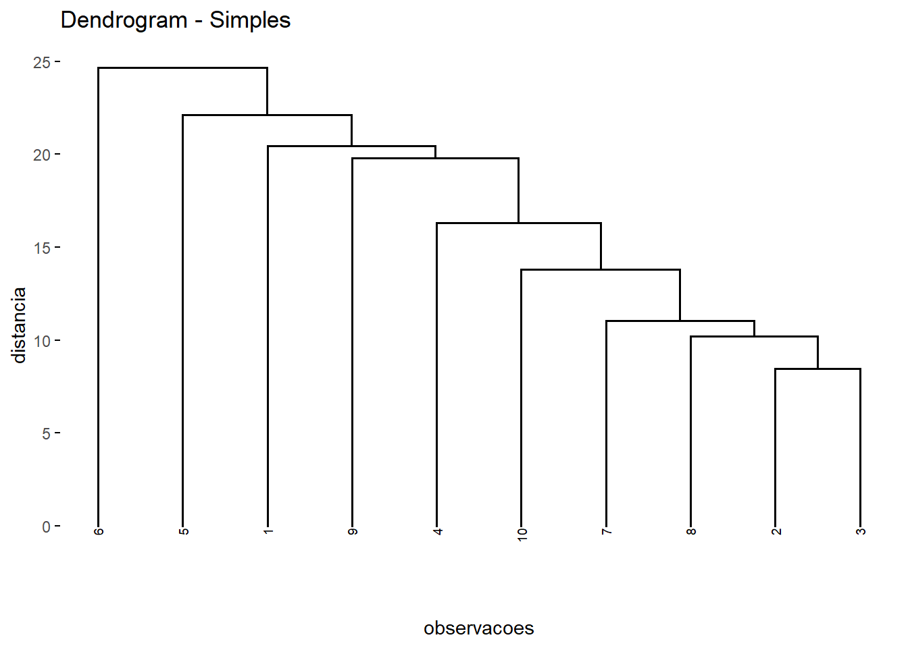
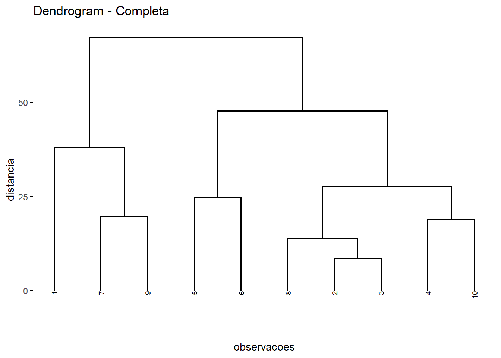
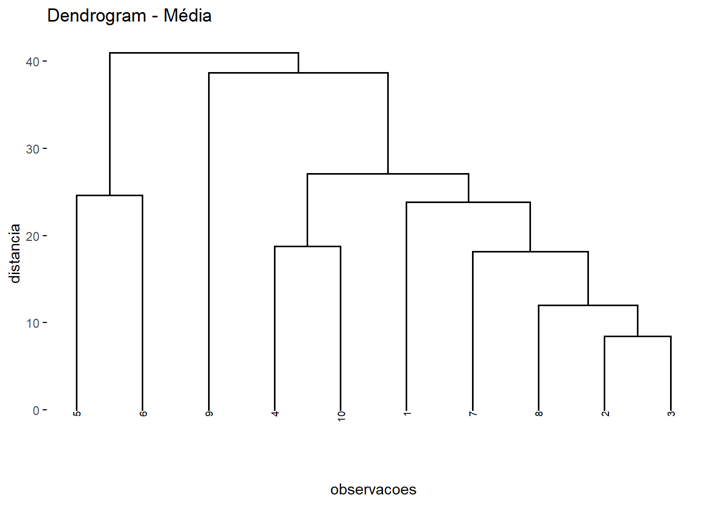
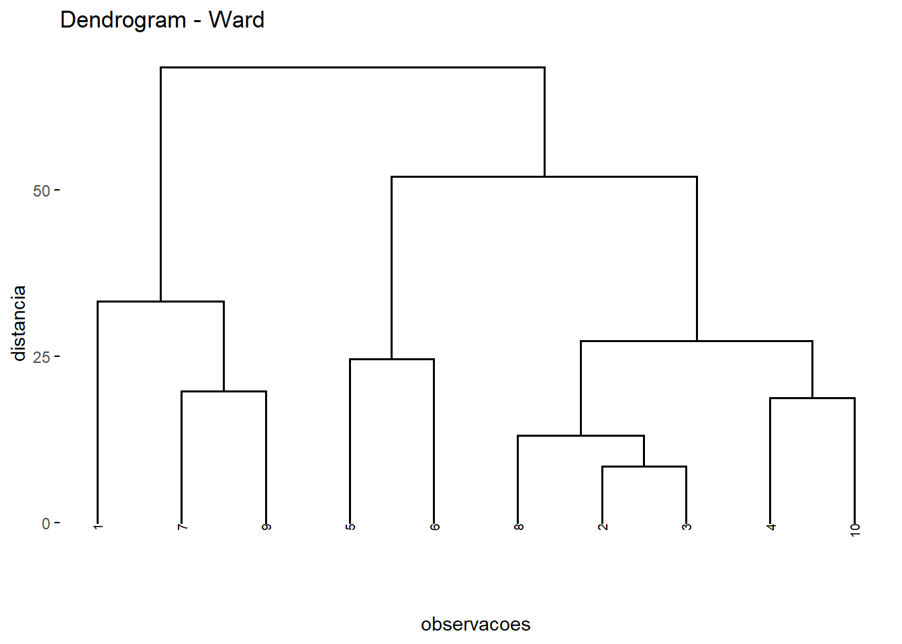
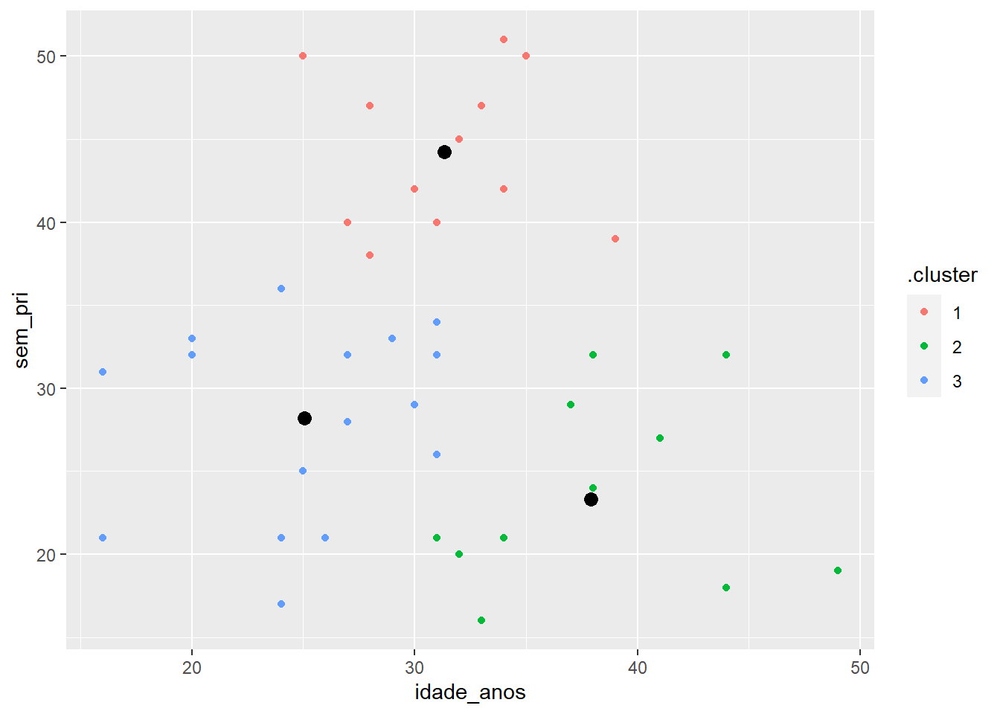
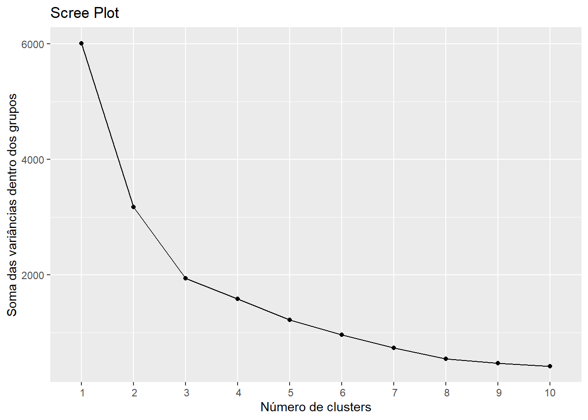
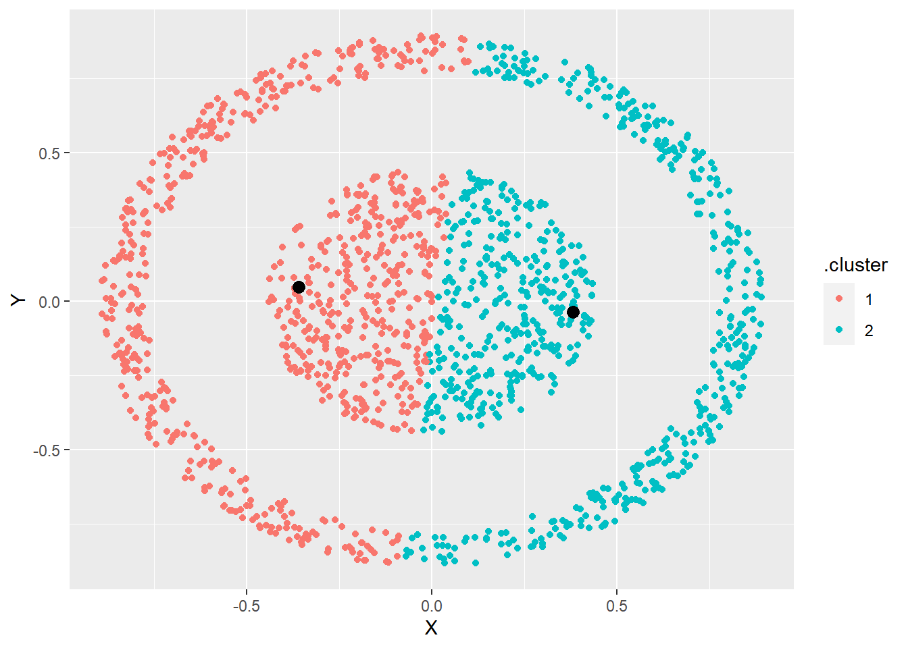
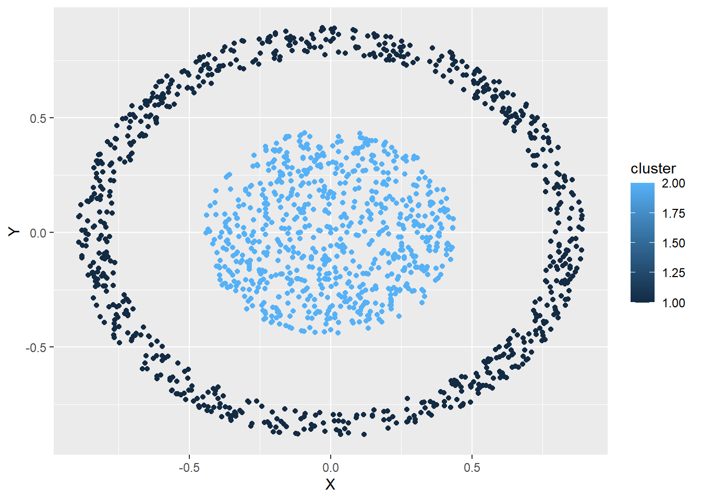

sigma <- matrix(c(8,-2,-2,5),nrow = 2)
sigma [,1] [,2]
[1,] 8 -2
[2,] -2 5eigen(sigma)eigen() decomposition
$values
[1] 9 4
$vectors
[,1] [,2]
[1,] -0.8944272 -0.4472136
[2,] 0.4472136 -0.8944272Aprendizado não supervisionado é o ramo da aprendizagem de maquina, ou aprendizado estatístico, que trabalho majoritariamente com o agrupamento de variáveis com ou sem o conhecimento prévio de como essas variáveis estão subdivididas na natureza, ou ainda criar um subdivisão para essas com base nas características em estudo, como por exemplo fatores fatores socioeconômicos. Nesse texto falaremos de forma explicativa e aplicável sobre análise de componentes principais e métodos de agrupamentos, hierárquicos e não hierárquicos, com suas devidas funções na linguagem de programação proposta.
Para melhor introduzir o campo do aprendizado não supervisionado, alguns conceitos de álgebra são necessários para compreender o que se passa por trás de cada algoritmo da análise de dados multivariada. Vamos introduzir com vetores e matriz, seguindo com decomposição espectral para então darmos inicio a área da estatística multivariada ou aprendizado não supervisionado. Não é objetivo desse livro demonstrar conceitos algébricos e nem se aprofundar demais no assunto Johnson, Wichern, et al. (2002).
Vetor Aleatório : Seja X um vetor contendo p componentes, onde cada componente é uma variável aleatória, isto é, \(X_i\) é uma variável aleatória, \(\forall\quad i =1,2,...,p\). Então X é chamado de vetor aleatório e é denotado por:
\[ \begin{align} X &= \begin{bmatrix} X_{1} \\ X_{2} \\ \vdots \\ X_{p} \end{bmatrix} \end{align} \]
O vetor transposto do vetor aleatório X é denotadopor \(X' = [X_1 X_2 X_3 ...X_p]\)
Vetor de Médias : O vetor \(\mu\) é chamado vetor de médias quando \(E(X) = \mu\) onde X é um vetor aleatório. Dessa forma
\[ \begin{align} E(X) &= \begin{bmatrix} E(X_{1}) \\ E(X_{2}) \\ \vdots \\ E(X_{p}) \end{bmatrix} \end{align} = \mu = \begin{bmatrix} \mu_1 \\ \mu_2 \\ \vdots \\ \mu_p \end{bmatrix} \]
Matriz de covariâncias : A matriz de variâncias e covariâncias do vetor X é denotada por,
\[ Cov(X) = V(X) = Var(X) = \Sigma_{p\times p} = \begin{bmatrix} \sigma_{11} & \sigma_{12} & ... & \sigma_{1p} \\ \sigma_{21} & \sigma_{22} & ... & \sigma_{2p} \\ \vdots &\vdots & \ddots &\vdots \\ \sigma_{p1} & \sigma_{p2} & ... & \sigma_{pp} \end{bmatrix} \]
Onde \(\sigma_{ii}\) representa a variância do elemento \(X_i\) do vetor aleatório e \(\sigma_{ij} = E[(X_i- \mu_i)(X_j - \mu_j)]\) \(\forall\quad i,j = 1,\dots,p\). A matriz de covariância é uma matriz simétrica, sua transposta é igual a ela mesma, ou seja \(\Sigma = '\Sigma\). Sendo tambem não negativa definida, \(a'\Sigma a \geq 0\) para todo vetor de constantes pertencentes aos reais.
Matriz de correlação : A matriz de correlação do vetor X é denotada por,
\[ P_{p\times p} = \begin{bmatrix} 1 & \rho_{12} & \rho_{13}& ... & \rho_{1p} \\ \rho_{21} & 1 & \rho_{23}&... & \rho_{2p} \\ \rho_{31} & \rho_{32} & 1 &... & \rho_{3p} \\ \vdots &\vdots & \ddots &\vdots \\ \rho_{p1} & \rho_{p2} &\rho_{p3}& ... & 1 \end{bmatrix} \]
Em que
\[ \rho_{ij} = \frac{\sigma_{ij}}{\sqrt{\sigma_{ii}\sigma_{jj}}} = \frac{\sigma_{ij}}{\sigma_i\sigma_j} \]
Auto Valores e Auto Vetores : Se \(\Sigma\) for uma matriz quadrada, ou seja \(\Sigma_{p\times p}\), então um vetore não nulo \(e\) em \(R^n\) é denominado autovetor de \(\Sigma\) se \(\Sigma e\) for um múltiplo escalar de \(e\), isto é,
\[ \Sigma e = \lambda e \]
com algum escalar \(\lambda\). O escalar \(\lambda\) é denominado de autovalor de \(\Sigma\), e dizemos que \(e\) é um autovetor associado a \(\lambda\). Por \(\Sigma\) ser uma matriz não negativa definida seus autovalores \(\lambda_i\) associados tambem serão não negativos. Os autovetores e autovalores serão necessários para a análise de componentes principais mais a frente abordada.
Ainda é necessário uma forma de encontrar os autovetores e autovalores associados a uma matriz \(\Sigma\). Se \(\Sigma\) for uma matriz quadrada, então \(\lambda\) se, e somente se, \(\lambda\) satisfaz a equação
\[ det(\lambda I - \Sigma) = 0 \]
Onde det é o determinante e \(I\) a matriz identidade. Para esclarecimento, suponha como exemplo que,
\[ \Sigma = \begin{bmatrix} 8 & -2 \\ -2 & 5 \end{bmatrix} \]
Então,
\[ \begin{split} det\left(\begin{bmatrix} \lambda& 0\\ 0 & \lambda \end{bmatrix} - \begin{bmatrix} 8 & -2 \\ -2 & 5 \end{bmatrix} \right) = 0\\ det\left(\begin{bmatrix} \lambda - 8 & 2 \\ 2 & \lambda-5 \end{bmatrix} \right) = 0 \\ (\lambda - 8)\times(\lambda-5) - (2)\times(2) = 0 \end{split} \]
Resolvendo a equação obtemos os valores de \(\lambda_1 = 9\) e \(lambda_2 = 4\), podemos encontrar os autovetores \(v\) associados seguindo a definição:
\[ \begin{bmatrix} 8&-2\\ -2 & 5 \end{bmatrix} \begin{bmatrix} v_{11}\\ v_{12} \end{bmatrix} = 9\begin{bmatrix} v_{11}\\ v_{12} \end{bmatrix} \rightarrow v_{11} =- 2v_{12} \]
Note que para cada autovalor temos infinitos possíveis autovetores dentro dos reais. Nos restringiremos aos autovetores normalizados.Dizemos que um vetor \(e_i\) é normalizado quando:
\[ e_i = \begin{bmatrix} e_{i1}\\ e_{i2}\\ \vdots\\ e_{ip} \end{bmatrix} \]
Em que
\[ ||e_i|| = \sqrt{e^2_{i1} + e^2_{i2} + \dots + e^2_{ip}} = 1 \]
O teorema da decomposição espectral é de extrema importância em álgebra matricial e estatística multivariada, ele relaciona a matriz com seus autovalores e autovetores normalizados.
Suponha \(\Sigma\) a matriz de covariâncias. Então existe uma matriz ortogonal \(O\)(matriz no qual sua transposta é igual a sua inversa) tal que,
\[ O'\Sigma O = \begin{bmatrix} \lambda_1 & 0 & 0 &\dots & 0\\ 0&\lambda_2& 0 & \dots & 0 \\ 0 & 0 &\lambda_3 &\dots & 0\\ \vdots& \vdots & \vdots & \ddots & \vdots\\ 0 & 0 & 0 & \dots& \lambda_p \end{bmatrix} = \Lambda \]
Onde \(\lambda\_1 \geq \lambda\_2 \geq \dots \lambda\_p\geq0\) são os autovalores ordenados em ordem decrescente da matriz \(\Sigma\). Nesse caso, dizemos que a matriz \(\Sigma\) é similar à matriz \(\Lambda\), que implica em:
\(det(\Sigma) = det(\Lambda) = \prod^p_{i=1} \lambda_i\)
traço\((\Sigma) =\) traço\((\Lambda) = \lambda_1 +\dots+\lambda_p\)
Tem-se que a i-ésima coluna da matriz \(O\) é o autovetor normalizado \(e_i\) relacionado ao autovalor \(\lambda_i\). Então a matriz \(O\) é dada por \(O = [e_1,e_2,\dots,e_p]\) e pelo teorema da decomposição espectral, podemos ver que:
\[ \Sigma = O \Lambda O' = \sum_{i=1}^p \lambda_i e_i e_i' \]
Dentro do R é possível realizar a decomposição espectral usando a função eigen(),
sigma <- matrix(c(8,-2,-2,5),nrow = 2)
sigma [,1] [,2]
[1,] 8 -2
[2,] -2 5eigen(sigma)eigen() decomposition
$values
[1] 9 4
$vectors
[,1] [,2]
[1,] -0.8944272 -0.4472136
[2,] 0.4472136 -0.8944272A análise de componentes principais se preocupa em conseguir explicar a variância e covariância de uma estrutura de variáveis através de algumas poucas combinações lineares. Tendo como principal objetivo dessa análise a redução de dimensionalidade e interpretação das relações. Essas combinações lineares são os componentes principais e são não correlacionadas entre sí. Quando assumimos que as variáveis originiais possuem distribuição normal, as componentes, além de não correlacionadas são normalmente distribuidas e idependentes. Os componentes principais são extraidos através da decomposição da matriz de covariância do vetor aleatório. Caso alguma trasnformação seja realizada nesse vetor, a decomposição será realizada na matriz de covariância do vetor transformado. Um caso muito utilizado, suponha que nossas variáveis estão em escalas muito diferentes, o PCA pode acabar por dar mais variabilidade a essa variável com escala superior, para isso então padronizamos o vetor. Utilizar a matriz de covariância do vetor transformado e a matriz de correlação do vetor originais são ações equivalentes nessa situação.
Definição: Seja X um vetor aleatório com \(\mu = E(X)\) e \(\Sigma = Var(X)\) e \((\lambda_i,e_i), i = 1,\dots,p\) os pares de autovalores e autovetores normalizados associados de \(\Sigma\). Então,
\[ \begin{split} Y = O'X,\quad \textrm{com}\quad O = [e_1,e_2,\dots,e_p],\textrm{ os componentes principais de X}\\ \textrm{ou seja}\\ Y = \begin{bmatrix} Y_1\\ \vdots\\ Y_d \end{bmatrix} \textrm{ com } \quad Y_1 = e_1'X = e_{11}X_1 + e_{12}X_2 + \dots + e_{1p}X_p \end{split} \]
O primeiro componente principal. Os componentes principais de X, Y, são tais que,
\[ \begin{split} \mu_y = E(Y) = E(O'X) = O'E(X) = O'\mu_x\\ \Sigma_y = Var(Y) = Var(O'X) = O'Var(X)O = O'\Sigma_xO = \Lambda \end{split} \]
ou seja
\[ cov(Y_i,Y_j) = 0, \forall i \neq j \textrm{ e } Var(Y_i) = \lambda_i \]
A prova desse resultado pode ser vista em (Johnson, Wichern, et al. 2002, 5:432).
Descrevemos a variância total da população como sendo o somatório de todos os autovalores \(\lambda\). A partir disso, podemos descrever a proporção da variância total explicada pela j-ésima componente como sendo:
\[ \frac{\lambda_j}{\sum_{i=1}^p \lambda_i} \qquad \forall j =1,\dots,p \]
Para algum \(p\) significativamente grande, podemos utilizar \(d<p\) componentes ao invés das \(p\) variáveis originais, considerando que, podemos descrever uma proporção relativamente alta da variância com essas \(d\) componentes.
Se \(Y_i = e'_iX, i =1\dots,p\) são as componentes principais obtidas da matriz de covariância, então
\[ \rho_{Y_i,X_j} = \frac{e_{ij}\sqrt{\lambda_i}}{\sigma_{jj}}, \quad \forall i,j=1,\dots p \]
São os coeficientes de correlação entre a componente \(Y_i\) e a variável \(X_j\)
Para realmente entender a aplicabilidade da análise de componentes, vamos pegar um subconjunto do banco de dados mtcars, conjunto de dados no R base, consiste nas características de modelos de carros. Selecionaremos um subconjunto de colunas numéricas para conseguirmos trabalhar, considerando que PCA funciona melhor com variáveis numéricas. Há possibilidade de transformação de variáveis categoricas em variáveis dummy, porem o algoritmo não será tão preciso, também não sendo possível trabalhar com variáveis categóricas ordinais nesse caso.
(deixei um exemplo com mtcars pois o banco de dados trabalhado no livro tem poucas variaveis numericas)
| mpg | cyl | disp | hp | drat | wt | qsec | gear | carb | |
|---|---|---|---|---|---|---|---|---|---|
| Mazda RX4 | 21.0 | 6 | 160 | 110 | 3.90 | 2.620 | 16.46 | 4 | 4 |
| Mazda RX4 Wag | 21.0 | 6 | 160 | 110 | 3.90 | 2.875 | 17.02 | 4 | 4 |
| Datsun 710 | 22.8 | 4 | 108 | 93 | 3.85 | 2.320 | 18.61 | 4 | 1 |
| Hornet 4 Drive | 21.4 | 6 | 258 | 110 | 3.08 | 3.215 | 19.44 | 3 | 1 |
| Hornet Sportabout | 18.7 | 8 | 360 | 175 | 3.15 | 3.440 | 17.02 | 3 | 2 |
| Valiant | 18.1 | 6 | 225 | 105 | 2.76 | 3.460 | 20.22 | 3 | 1 |
Podemos obter de forma simples no R as componentes, bem como a proporção da variância explicada, com a função prcomp(). Bem como citado tambem é comum padronização das variáveis devido a escala de cada característica, para isso basta informar o parâmetro scale. como TRUE dentro da função.
dados.pca <- dados |>
prcomp()
paste('dados não padronizados: ',sep = "\n")[1] "dados não padronizados: "dados.pca |> summary()Importance of components:
PC1 PC2 PC3 PC4 PC5 PC6 PC7
Standard deviation 136.532 38.14735 3.06642 1.27492 0.90474 0.64734 0.3054
Proportion of Variance 0.927 0.07237 0.00047 0.00008 0.00004 0.00002 0.0000
Cumulative Proportion 0.927 0.99938 0.99985 0.99993 0.99997 0.99999 1.0000
PC8 PC9
Standard deviation 0.2859 0.2159
Proportion of Variance 0.0000 0.0000
Cumulative Proportion 1.0000 1.0000#padronizando as variaveis devido a diferenca de escalas
dados.pca.padr <- dados |>
prcomp(scale. = T)
paste('dados padronizados:',sep = "\n")[1] "dados padronizados:"dados.pca.padr |> summary()Importance of components:
PC1 PC2 PC3 PC4 PC5 PC6 PC7
Standard deviation 2.3782 1.4429 0.71008 0.51481 0.42797 0.35184 0.32413
Proportion of Variance 0.6284 0.2313 0.05602 0.02945 0.02035 0.01375 0.01167
Cumulative Proportion 0.6284 0.8598 0.91581 0.94525 0.96560 0.97936 0.99103
PC8 PC9
Standard deviation 0.2419 0.14896
Proportion of Variance 0.0065 0.00247
Cumulative Proportion 0.9975 1.00000#outras informacoes
dados.pca.padr |> print()Standard deviations (1, .., p=9):
[1] 2.3782219 1.4429485 0.7100809 0.5148082 0.4279704 0.3518426 0.3241326
[8] 0.2418962 0.1489644
Rotation (n x k) = (9 x 9):
PC1 PC2 PC3 PC4 PC5 PC6
mpg -0.3931477 0.02753861 -0.22119309 -0.006126378 -0.3207620 0.72015586
cyl 0.4025537 0.01570975 -0.25231615 0.040700251 0.1171397 0.22432550
disp 0.3973528 -0.08888469 -0.07825139 0.339493732 -0.4867849 -0.01967516
hp 0.3670814 0.26941371 -0.01721159 0.068300993 -0.2947317 0.35394225
drat -0.3118165 0.34165268 0.14995507 0.845658485 0.1619259 -0.01536794
wt 0.3734771 -0.17194306 0.45373418 0.191260029 -0.1874822 -0.08377237
qsec -0.2243508 -0.48404435 0.62812782 -0.030329127 -0.1482495 0.25752940
gear -0.2094749 0.55078264 0.20658376 -0.282381831 -0.5624860 -0.32298239
carb 0.2445807 0.48431310 0.46412069 -0.214492216 0.3997820 0.35706914
PC7 PC8 PC9
mpg -0.38138068 -0.12465987 0.11492862
cyl -0.15893251 0.81032177 0.16266295
disp -0.18233095 -0.06416707 -0.66190812
hp 0.69620751 -0.16573993 0.25177306
drat 0.04767957 0.13505066 0.03809096
wt -0.42777608 -0.19839375 0.56918844
qsec 0.27622581 0.35613350 -0.16873731
gear -0.08555707 0.31636479 0.04719694
carb -0.20604210 -0.10832772 -0.32045892Da informação obtida por print(dados.pca.padr), podemos identificar os loadings da análise. Os loadings podem ser definidos como os coeficientes da combinação linear das variáveis originais de onde as componentes principais são construidas. De um ponto de vista matemático os loadings são iguais às coordenadas das variáveis divididas pela raiz quadrada do autovalor associado ao componente. são úteis quando você deseja entender os resultados. Lembre-se de que cada nova variável Y é uma combinação linear de todas as variáveis. A matriz de loadings representa verticalmente quanto da variância de cada componente é explicada por cada variável original. Vemos por exemplo que, conforme mpg aumenta, a PC1 tem um descrécimo. Os loadings são muito úteis na hora de nomear nossas componentes por essa relação que faz com cada uma das variáveis.
Até agora foi descrito que podemos utilizar um número \(d < p\) de componentes principais que contenha uma explicabilidade aproximada dos dados originais, mas qual seria esse valor \(d\)? Há um conjunto de técnicas para essa tomada de decisão, sendo uma delas por exemplo a proporção de variância acumulada total explicada pelas componentes \(Y_1,\dots,Y_p\):
\[ \frac{\sum^d_{j=1}\lambda_j}{\sum_{i=1}^p \lambda_i} \]
Esse valor é observado na função prcomp() já citada, como cumulative Proportion no resultado do summary() da função.
Podemos utilizar como apoio gráfico e auxílio na tomada de decisão para o número de componentes é o scree plot, conhecido também como gráfico do cotovelo. Consiste na ordenação dos autovalores do maior para o menor, procurando por uma espécie de cotovelo dentro do gráfico. Selecionamos o número $i $ de componentes em que há um grande valor para observação \(\lambda_{i-1}\) em comparação a observação \(\lambda_i\) e uma pequena alteração da observação \(\lambda_i\) para a observação \(\lambda_{i+1}\). Observe a seguir
#variancia explicada por cada componente
var_explicada = dados.pca.padr$sdev^2 / sum(dados.pca.padr$sdev^2)
library(ggplot2)
qplot(c(1:9), var_explicada) +
geom_line() +
xlab("Principal Componente") +
ylab("variancia explicada") +
ggtitle("Scree Plot") +
ylim(0, 1) +
scale_x_discrete(limits=c(1:9))
Podemos por meio, tanto do scree plot, quanto pelo valor da variância explicada acumulada, selecionar \(d= 3\) componentes para reter, pela queda de 2 para 3 ser significante, enquanto a de 3 para 4 nem tanto. Reduzindo número de variáveis a 3.
##Métodos de Agrupamentos
A análise de agrupamentos ou clusterização, tem como objetivo, agrupar indivíduos da população usando como base medidas de similaridade entre eles, formando grupos heterogêneos entre sí com homogenuidade entre indivíduos de mesmo cluster. Muito utilizado na classificação de tipos de clientes de mercado, usuários de aplicativos, ou até mesmo em áres como psicologia, para agrupamentos de perfis de personalidade. Outro exemplo pode ser visto no trabalho (colocar link mariana).
De forma mais intutitiva, essas medidas de dissimilaridade seriam formas de numerar o quão próximo ou distânte a característica de um indivíduo (Idade por exemplo), se aproxima da mesma característica de outro indivíduo da mesma população. Não possuimos uma única forma de medida. Aqui apresentaremos as mais conhecidas e mais trabalhadas. Não existe uma métrica melhor, a eficácia de uma medida dependerá do caso em que a mesma será aplicada. Suponha que para cada elemento amostral será obtido o vetor \(X = [X_{1},X_{2},\dots,X_{p}]'\) de medidas, onde \(X_{i}\) representa a medida da i-ésima característica para a unidade amostral.
Distância Euclidiana: Essa é provavelmente a mais conhecida e usada medida de distância. Ela simplesmente é a distância geométrica no espaço multidimensional. Considere o i-ésimo e o j-ésimo indivíduo:
\[ d(X,Y) = \sqrt{\sum^p_{i=1}(X_i - Y_i)^2} \]
Distância de Canberra: A distância de Camberra examina a soma das séries de diferenças fracionárias entre as coordenadas do par de observações.
\[ d(X,Y) = \sum^p_{i=1}\frac{|X_i - Y_i|}{|X_i| + |Y_i|} \]
Distância de Manhattan: A distância de Manhattan (“City Block” ou “Geometria do Táxi”) é uma forma de geometria em que a distância entre dois pontos é a soma das diferenças absolutas de suas coordenadas.
\[ d(X,Y) = \sum^p_{i=1}|X_i- Y_i| \]
Distância de Chebyshev: Em matemática, distância de Chebyshev (ou distância de Tchebychev), métrica máxima ou \(L_{\infty}\) métrica, é uma métrica definida em um espaço vetorial onde a distância entre dois vetores é a maior de suas diferenças ao longo de qualquer característica.
\[ d(X,Y) = \max_i(|X_i - Y_i|) \]
Distância de Minkowski: A distância de Minkowski de ordem \(k\), sendo \(k\) inteiro, pode ser considerada uma generalização tanto da distância euclidiana quanto da distância de manhattan.
\[ d(X,Y) = \left(\sum^p_{i=1}|X_i - Y_i|^k\right)^\frac{1}{k} \]
Todas essas distâncias aqui citadas podem ser acessadas pela função dist() do R, alterando o parãmetro method para a distância desejada, da seguinte forma :
db<- dados[1:10,c('sem_pri','idade_anos','dt_evoluca_2','ano','dt_sint')]
db$ano <- db
db.dist <- db |> na.omit() |> dist(method = 'euclidean')
db.dist 1 2 3 4 5 6 7
2 21.633308
3 21.633308 8.485281
4 31.292172 24.738634 16.321765
5 50.521283 28.962044 30.886890 37.804762
6 67.242843 47.774470 45.615787 43.266615 24.665766
7 20.435264 11.063453 18.782971 34.985711 35.445733 56.920998
8 31.805660 13.813037 10.217632 17.076299 22.126907 35.445733 24.665766
9 37.994736 28.962044 37.421919 53.699162 40.958516 65.424766 19.809089
10 44.009090 27.626075 22.768399 18.782971 22.847319 24.738634 38.418745
8 9
2
3
4
5
6
7
8
9 40.249224
10 13.813037 52.752251Consguindo a distância euclidiana entre cada uma das 10 primeiras observações para as características selecionadas.
Dentro da estatística multivariada dividimos frequêntemente as técnicas aglomerativas em dois tipos: hierárquicos e não hierárquicos, sendo as hierárquicas classificadas em aglomerativa e divisivas. Métodos hierárquicos são geralmente utilizados na análise exploratória afim de encontrar um número ótimo de clusters para o conjunto de variáveis, para as técnicas não hierárquicas é necessário um valor prévio de grupos.
Considere cada observação como um grupo único, nos métodos aglomerativos vamos anexando cada grupo um ao outro em cada passo, usando suas medidas de similaridade para esse agrupamentos. Em cada instância do processo o par de grupos com a menor medida de dissimilaridade. Suponha a distância euclidiana por exemplo, em cada passo, verificaremos os \(p\) grupos e anexamos o par com a menor distância euclidiana, seguindo para o próximo passo realizamos o mesmo com os \(p-1\) grupos, até q sobre apenas 1 grupo com todas as observações. Seguindo o processo por \(p-1\) passos.
Ligamento Simples: Assumindo que cada observação é um cluster incialmente, suponha as observações X e Y sendo as com menor distância, ou os vizinhos mais próximos, formando o novo cluster {XY}. A distância entre o grupo {XY} e os demais grupos, suponha W, é definida como:
\[ d(\{XY\},W) = \min\{d_{XW},d_{YW}\} \]
Considere a matriz de distâncias do exemplo anterior das 5 primeiras observações:
\[ \begin{bmatrix} d_{1,2}=21.63 & & & \\ d_{1,3}= 21.63 & d_{2,3}=8.48 & & \\ d_{1,4}=31.29 & d_{2,4}=24.73 & d_{3,4}=16.32 \\ d_{1,5}=50.52 & d_{2,5}=28.96 & d_{3,5}=30.88 & d_{4,5}=37.80 \end{bmatrix} \]
Sendo a distância entre a observação 3 e 2 a menor distância dentre todas as observações. Anexaremos as duas observações em um único grupo, assumindo a nova distância desse grupo com as demais observações como sendo o minimo da distância das variaveis do grupo os demais grupos:
\[ \begin{bmatrix} d_{23,1}=21.63 & & & \\ d_{23,4}= 16.32 & d_{1,4}=31.29 & & \\ d_{23,5}=28.96 & d_{1,5}=50.52 & d_{4,5}=37.80 \end{bmatrix} \]
Dando prosseguimento com o processo, note que agora a menor distância se da entre os grupos {23} e o grupo {4}, logo os dois serão reagrupados em um único cluster, seguindo com esse mesmo processo até que reste apenas um grupo.
\[ \begin{bmatrix} d_{234,1}=21.63 \\ d_{234,5}= 28.96 & d_{4,5} = 37.80 \end{bmatrix} \rightarrow \begin{bmatrix} d_{1234,5}=28.96 \end{bmatrix} \]
Os resultados do agrupamento de ligação simples podem ser exibidos graficamente na forma de um dendrograma, ou diagrama de árvore. Os ramos na árvore representam clusters. As ramificações se unem em nós cujas posições ao longo de uma distância (ou similaridade) indicam o nível em que as junções ocorrem. Veja para o exemplo acima considerando agora as 10 observações, passando na função hclust() para ligação dos grupos, o parâmetro method para tipo de ligação, no caso atual method = "single".
hc <- db.dist |>
hclust( method = "single")
library(factoextra)Welcome! Want to learn more? See two factoextra-related books at https://goo.gl/ve3WBafviz_dend(hc, cex = 0.5,
main = "Dendrogram - Simples",
xlab = "observacoes", ylab = "distancia", sub = "")
Ligação Completa : Funciona de maneira parecida com a ligação simples, uniremos os grupos com menor distância entre sí até que reste apenas um único grupo. Porém, as distâncias entre as variáveis unidas, digamos X e Y, das demais variáveis W será definida como:
\[ d(\{XY\},W) = \max\{d_{XW},d_{YW}\} \]
Mas o procedimento das demais iterações será da mesma forma, fazendo o link entre os grupos de menor distância. Suponha o exemplo anterior:
\[ \begin{bmatrix} d_{1,2}=21.63 & & & \\ d_{1,3}= 21.63 & d_{2,3}=8.48 & & \\ d_{1,4}=31.29 & d_{2,4}=24.73 & d_{3,4}=16.32 \\ d_{1,5}=50.52 & d_{2,5}=28.96 & d_{3,5}=30.88 & d_{4,5}=37.80 \end{bmatrix} \]
Uniremos as observações 2 e 3 assim como anteriormente, e a cada passo, a nova distância será a distância máxima entre as variáveis do grupo e os demais grupos:
\[ \begin{split} \begin{bmatrix} d_{23,1}=21.63 & & & \\ d_{23,4}= 24.73 & d_{1,4}=31.29 & & \\ d_{23,5}=30.88 & d_{1,5}=50.52 & d_{4,5}=37.80 \end{bmatrix}\\ \\ \rightarrow \begin{bmatrix} d_{123,4}=31.29 \\ d_{123,5}= 50.52 & d_{4,5} = 37.80 \end{bmatrix} \rightarrow \begin{bmatrix} d_{1234,5}=50.52 \end{bmatrix} \end{split} \]
Observe agora o dendrograma para ligação completa com 10 observações.
hc <- db.dist |>
hclust( method = "complete")
library(factoextra)
fviz_dend(hc, cex = 0.5,
main = "Dendrogram - Completa",
xlab = "observacoes", ylab = "distancia", sub = "")
Ligação Média: A ligação média trata a distância entre dois clusters como a distância média entre todos os pares de itens onde um membro de um par pertence a cada cluster. Considere o grupo {XY} e o grupo {W}, e \(N_w\) como sendo número de elementos em {W}, e \(N_{XY}\) número de elementos em {XY}, então:
\[ d(\{XY\},W) = \frac{\sum^{N_{xy}}_{i=1}\sum_{j=1}^{N_w}d_{ij}}{N_{xy}N_w} \]
Onde \(d_{ij}\) representa a distância entre a i-ésima observação do grupo {XY} e j-ésima observação do grupo {w}. Seguindo com o exemplo anterior e seu dendrograma obtemos:
\[ \begin{split} \begin{bmatrix} d_{1,2}=21.63 & & & \\ d_{1,3}= 21.63 & d_{2,3}=8.48 & & \\ d_{1,4}=31.29 & d_{2,4}=24.73 & d_{3,4}=16.32 \\ d_{1,5}=50.52 & d_{2,5}=28.96 & d_{3,5}=30.88 & d_{4,5}=37.80 \end{bmatrix}\\ \\\rightarrow \begin{bmatrix} d_{23,1}=21.63 & & & \\ d_{23,4}= 20.525 & d_{1,4}=31.29 & & \\ d_{23,5}=29.92 & d_{1,5}=50.52 & d_{4,5}=37.80 \end{bmatrix} \\ \\ \rightarrow \begin{bmatrix} d_{234,1}=24.85 \\ d_{234,5}= 32.54 & d_{1,5} = 50.52 \end{bmatrix} \rightarrow \begin{bmatrix} d_{1234,5}=37.04 \end{bmatrix} \end{split} \]
hc <- db.dist |>
hclust( method = "average")
library(factoextra)
fviz_dend(hc, cex = 0.5,
main = "Dendrogram - Média",
xlab = "observacoes", ylab = "distancia", sub = "")
Método Ward de clusterização : O método de ward se baseia na minimização da “perda de informação” ao juntar dois grupos. É tido como perda de informação o crescimento da soma dos quadrados dos erros, \(SQE\). Suponha o grupo {W}, a \(SQE_W\) pode ser descrita como a soma dos quadrados das distâncias de cada item do grupo para a média do grupo. Definindo \(SQE\) como a soma dos \(SQE_i\), onde \(i\) representa cada um dos \(N\) grupos. Em cada instância do processo é realizado a junção de todos os possiveis pares de grupos, optamos pela união que obtiver o menor incremento da \(SQE\). Note que no passo 0 essa soma é equivalente a 0, considerando que para cada \(SQE_i\), com apenas uma observação por cluster, a média será a própria observação. Enquanto que ao considerar o grupo final com todas as observações é possível obter a \(SQE\) por:
\[ SQE = \sum^N_{j=1}(X_j - \bar{X})'(X_j - \bar{X}) \]
Onde \(X_j\) representa a j-ésima observação do grupo.
hc <- db.dist |>
hclust( method = "ward.D2")
library(factoextra)
fviz_dend(hc, cex = 0.5,
main = "Dendrogram - Ward",
xlab = "observacoes", ylab = "distancia", sub = "")
Os métodos hierárquicos são muito utilizados na exploração dos dados, bem como para pré definição do número de clusters, pois como veremos a seguir nos métodos não hierarquicos temos a necessidade de informar um número prévio de grupos. O dendograma é tido como principal forma de definição desses \(k\) grupos. Para definir o número ideal de clusters vamos utilizar o exemplo do método Ward. Observe que a distância para união do grupo {5,6} e {2,3,4,8,10} é relativamente grande se comparada as outras junções, uma forma de definir então seria \(k = 3\) grupos onde os grupos seriam, {1,7,9},{5,6} e {2,3,4,8,10} olhando o nível de fusão (distância) em que cada grupo precisou para se unir. Podemos então já utilizar \(k\) aproximado de 3 para iniciarmos nossos métodos não hieráquicos como veremos a seguir.
Dentro desse conjunto de métodos iremos trabalhar com o mais usual e conhecido, k-médias. Bem como dito, os métodos não hierárquicos precisam de um número pré definido de grupos \(k\), anexando cada observação a um grupo com base em \(k\) centróides que serão definidos pelo algoritmo.
K-médias é um método simples de particionamento, onde é necessário estabelecer um número \(k\) de grupos previamente a separação das variáveis. Definindo um número inicial de centróides, podendo esses ser observações do próprio conjunto de dados ou coordenadas aleatórias, é realizada a divisão do conjunto de dados, sendo cada observação anexada ao centro de menor distância, ou mais próximo. Com base nesse novo grupo criado, é determinado o nomo ponto central, que passa a ser a média do grupo. Baseado nesses novos pontos realizamos os passos anteriores por um número \(N\) de vezes até que não se tenha mais alteração na posição dos centróides. O resultado do processo são grupos heterogêneos entre sí com variáveis homogêneas entre sí, tendo a menor variância interna possível e a maior variação externa possível. O núemero de iterações do processo pode também ser pré estabelecido, considerando o custo computacional para bancos de dados grandes, é inviável a realização do processo até a falta de alteração dos clusters.
Exemplo:
Suponha os seguintes dados para 20 variáveis, e suponha que vamos fazer inicialmente para \(k=3\) grupos.
| idade_anos | sem_pri | |
|---|---|---|
| 1 | 24 | 17 |
| 2 | 31 | 26 |
| 3 | 27 | 28 |
| 4 | 20 | 33 |
| 5 | 39 | 39 |
| 6 | 34 | 51 |
| 7 | 34 | 21 |
| 8 | 29 | 33 |
| 9 | 44 | 18 |
| 10 | 27 | 40 |
| 11 | 28 | 47 |
| 12 | 35 | 50 |
| 13 | 37 | 29 |
| 14 | 30 | 29 |
| 15 | 32 | 45 |
| 16 | 27 | 32 |
| 17 | 44 | 32 |
| 18 | 30 | 42 |
| 19 | 16 | 21 |
| 20 | 24 | 21 |
| 21 | 31 | 32 |
| 22 | 24 | 36 |
| 23 | 31 | 34 |
| 24 | 33 | 47 |
| 25 | 25 | 50 |
| 26 | 31 | 21 |
| 27 | 26 | 21 |
| 28 | 49 | 19 |
| 29 | 25 | 25 |
| 30 | 16 | 31 |
| 31 | 20 | 32 |
| 32 | 34 | 42 |
| 33 | 28 | 38 |
| 34 | 33 | 16 |
| 35 | 34 | 21 |
| 36 | 32 | 20 |
| 37 | 38 | 32 |
| 38 | 31 | 40 |
| 39 | 38 | 24 |
| 40 | 41 | 27 |
Suponha que os clusters são tidos inicialmente nas cordenadas:
| idade_anos | sem_pri | |
|---|---|---|
| 1 | 37 | 23 |
| 2 | 32 | 43 |
| 3 | 25 | 28 |
Agregando cada variável a um cluster obtemos então.
| idade_anos | sem_pri | Centróide | |
|---|---|---|---|
| 1 | 24 | 17 | 3 |
| 2 | 31 | 26 | 3 |
| 3 | 27 | 28 | 3 |
| 4 | 20 | 33 | 3 |
| 5 | 39 | 39 | 2 |
| 6 | 34 | 51 | 2 |
| 7 | 34 | 21 | 1 |
| 8 | 29 | 33 | 3 |
| 9 | 44 | 18 | 1 |
| 10 | 27 | 40 | 2 |
| 11 | 28 | 47 | 2 |
| 12 | 35 | 50 | 2 |
| 13 | 37 | 29 | 1 |
| 14 | 30 | 29 | 3 |
| 15 | 32 | 45 | 2 |
| 16 | 27 | 32 | 3 |
| 17 | 44 | 32 | 2 |
| 18 | 30 | 42 | 2 |
| 19 | 16 | 21 | 3 |
| 20 | 24 | 21 | 3 |
| 21 | 31 | 32 | 3 |
| 22 | 24 | 36 | 3 |
| 23 | 31 | 34 | 3 |
| 24 | 33 | 47 | 2 |
| 25 | 25 | 50 | 2 |
| 26 | 31 | 21 | 1 |
| 27 | 26 | 21 | 3 |
| 28 | 49 | 19 | 1 |
| 29 | 25 | 25 | 3 |
| 30 | 16 | 31 | 3 |
| 31 | 20 | 32 | 3 |
| 32 | 34 | 42 | 2 |
| 33 | 28 | 38 | 2 |
| 34 | 33 | 16 | 1 |
| 35 | 34 | 21 | 1 |
| 36 | 32 | 20 | 1 |
| 37 | 38 | 32 | 1 |
| 38 | 31 | 40 | 2 |
| 39 | 38 | 24 | 1 |
| 40 | 41 | 27 | 1 |
Com base nesses novos grupos definimos então o novo centróide como sendo a média das variáveis de cada grupo, ou seja:
| centroide | idade_anos | sem_pri |
|---|---|---|
| 1 | 37.36364 | 22.54545 |
| 2 | 32.30769 | 43.30769 |
| 3 | 25.06250 | 28.18750 |
Agregando cada variável a seu novo grupo e seguindo o processo até o número de iterações pré definidas ou até que não tenha mais alterações nas coordenadas dos centros de cada cluster.
No R base já está incluso uma função para o método k-médias, kmeans(), que pode ser implementado de maneira simples. considere o banco já discutido
kmeans.df <- df |>
kmeans(centers = 3, iter.max = 300)
kmeans.dfK-means clustering with 3 clusters of sizes 12, 12, 16
Cluster means:
idade_anos sem_pri
1 31.33333 44.25000
2 37.91667 23.33333
3 25.06250 28.18750
Clustering vector:
1 2 3 4 5 6 7 8 9 10 11 12 13 14 15 16 17 18 19 20 21 22 23 24 25 26
3 3 3 3 1 1 2 3 2 1 1 1 2 3 1 3 2 1 3 3 3 3 3 1 1 2
27 28 29 30 31 32 33 34 35 36 37 38 39 40
3 2 3 3 3 1 1 2 2 2 2 1 2 2
Within cluster sum of squares by cluster:
[1] 412.9167 669.5833 861.3750
(between_SS / total_SS = 67.6 %)
Available components:
[1] "cluster" "centers" "totss" "withinss" "tot.withinss"
[6] "betweenss" "size" "iter" "ifault" De forma simples podemos identificar os centros e em qual cada uma das variáveis foi atribuida após as \(N\) iterações. Identificamos também a variância entre clusters, bem como a variância total e entre as variáveis de cada grupo. Essa variância se torna importânte na identificação do valor \(k\) estabelecido.
dados_grupos <- kmeans.df |> broom::augment(df)
cent <- kmeans.df$centers
dados_grupos |>
ggplot(aes(x = idade_anos, y = sem_pri,col = .cluster)) +
geom_point() +
geom_point(aes(x = cent[1,1], y = cent[1,2]), color = "black", size = 3)+
geom_point(aes(x = cent[2,1], y = cent[2,2]), color = "black", size = 3)+
geom_point(aes(x = cent[3,1], y = cent[3,2]), color = "black", size = 3)
kmeans.dfK-means clustering with 3 clusters of sizes 12, 12, 16
Cluster means:
idade_anos sem_pri
1 31.33333 44.25000
2 37.91667 23.33333
3 25.06250 28.18750
Clustering vector:
1 2 3 4 5 6 7 8 9 10 11 12 13 14 15 16 17 18 19 20 21 22 23 24 25 26
3 3 3 3 1 1 2 3 2 1 1 1 2 3 1 3 2 1 3 3 3 3 3 1 1 2
27 28 29 30 31 32 33 34 35 36 37 38 39 40
3 2 3 3 3 1 1 2 2 2 2 1 2 2
Within cluster sum of squares by cluster:
[1] 412.9167 669.5833 861.3750
(between_SS / total_SS = 67.6 %)
Available components:
[1] "cluster" "centers" "totss" "withinss" "tot.withinss"
[6] "betweenss" "size" "iter" "ifault" Uma das formas já discutidas aqui sobre seleção do número ideal de \(k\) grupos é a pré utilização de um método hierárquico e análise de seu dendrograma. Porém, retomando os assuntos apresentados quando foi discutido PCA, podemos utilizar o scree plot da variação total como metodologia de definição do número ideal de clusters para o algorítmo. A utilização é realizada da mesma maneira, é feita a identificação do número \(k\) que sofra grande decréscimo da soma da variação dentro dos clusters para um número \(k-1\) e um pequeno em comparação com \(k+1\). A variação total é dada como:
\[ \sum^k_{i=1}\sum_{j\in C_i}d^2(x_j,c_i) \] Sendo \(C_i\) centro do i-ésimo grupo e \(x_j\) a j-ésima variável do i-ésimo grupo. A função de distância mais usual é a euclidiana discutida anteriormente.
var_totais <- vector()
for(i in 1:10){
var_totais[i] <- (df |> kmeans(centers = i, iter.max = 400))$tot.withinss
}
qplot(1:10, var_totais, geom = "line")
qplot(c(1:10), var_totais) +
geom_line() +
xlab("Número de clusters") +
ylab("Soma das variâncias dentro dos grupos") +
ggtitle("Scree Plot") +
scale_x_discrete(limits=c(1:10))Warning: Continuous limits supplied to discrete scale.
ℹ Did you mean `limits = factor(...)` or `scale_*_continuous()`?
Podemos definir a partir disso possíveis números ideais como 3, 4 ou até mesmo 6.
Para definirmos um modelo como sendo ótimo para aplicação, é necessário defir alguns parâmetros para determinar a qualidade de um modelo ou método. O k-médias por exemplo é um algoritmo muito sucetível a outliers, dados fora do padrão encontrado no banco de dados, que podem acabar por deixar de agrupar uma determinada variável ou simplesmente formar um grupo amais, sem que haja necessidade. Outro fator que é necessário manter a atenção é a determinação do formato do cluster. Muitos dos algoritmos consideram um formato esférico ou circular para as variáveis, veja o exemplo:
dados_circulo <- data.frame(
X = runif(5000, -1, 1),
Y = runif(5000, -1, 1)
) |>
dplyr::filter(X^2 + Y^2 <= 0.2 | (X^2 + Y^2 <= 0.8 & X^2 + Y^2 >= 0.6))
qplot(dados_circulo$X, dados_circulo$Y)
É notável como o agrupamento deve ser realizando simplesmente olhando para o gráfico proposto, porém, algoritmos como k-médias não pensam da mesma forma,
dados_circulo.km <- dados_circulo |> kmeans(centers = 2)
dados_circulo <- dados_circulo.km |> broom::augment(dados_circulo)
cent <- dados_circulo.km$centers
dados_circulo |>
ggplot(aes(x = X, y = Y,col = .cluster)) +
geom_point() +
geom_point(aes(x = cent[1,1], y = cent[1,2]), color = "black", size = 3)+
geom_point(aes(x = cent[2,1], y = cent[2,2]), color = "black", size = 3)
kmeans.dfK-means clustering with 3 clusters of sizes 12, 12, 16
Cluster means:
idade_anos sem_pri
1 31.33333 44.25000
2 37.91667 23.33333
3 25.06250 28.18750
Clustering vector:
1 2 3 4 5 6 7 8 9 10 11 12 13 14 15 16 17 18 19 20 21 22 23 24 25 26
3 3 3 3 1 1 2 3 2 1 1 1 2 3 1 3 2 1 3 3 3 3 3 1 1 2
27 28 29 30 31 32 33 34 35 36 37 38 39 40
3 2 3 3 3 1 1 2 2 2 2 1 2 2
Within cluster sum of squares by cluster:
[1] 412.9167 669.5833 861.3750
(between_SS / total_SS = 67.6 %)
Available components:
[1] "cluster" "centers" "totss" "withinss" "tot.withinss"
[6] "betweenss" "size" "iter" "ifault" É perceptível que o método por particionamento em médias não foi eficaz para o banco de dados em questão. Ao utilizar a função hcut() para particionamento utilizando um método hierárquico obtemos uma melhor resposta para o agrupamento das variáveis
dados_circulo.h <- hcut(dados_circulo[,1:2], k = 2, hc_method = "single")
d_circulo.h <- cbind(dados_circulo[,1:2],cluster=dados_circulo.h$cluster)
d_circulo.h |>
ggplot(aes(x = X, y = Y,col = cluster)) +
geom_point()
Os métodos hierárquicos apresentados no entanto, por utilizarem da distância de uma variável a outra são limitados a utilização de banco de dados numéricos, o que nem sempre é o encontrado nos problemas reais, é necessário optar nesse caso por métodos e algoritmos que consigam fazer a distinção mesmo na presença de variáveis categóricas. Fator relevante para a escolha do melhor algoritmo é a capacidade de lidar com um grande volume de dados. No k-médias temos a opção por exemplo de pré definirmos o número de iterações. Considere um grupo com milhões de variáveis, ao utilizar um método de ligação simples hierárquico faremos aproximadamente um milhão de ligações para depois identificar o número ideal de grupos, caso esse não seja conhecido (Caso mais comum). O ideal então é a análise exploratória de seus dados para com base nos conhecimentos sobre os diferentes tipos de métodos, saber qual será o de melhor aplicação para o determinado problema. Nada o impede de aplicar mais de um método e após sua aplicação identificar qual foi o modelo ótimo para o problema.